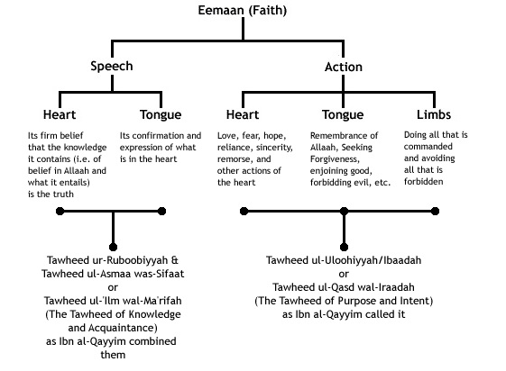
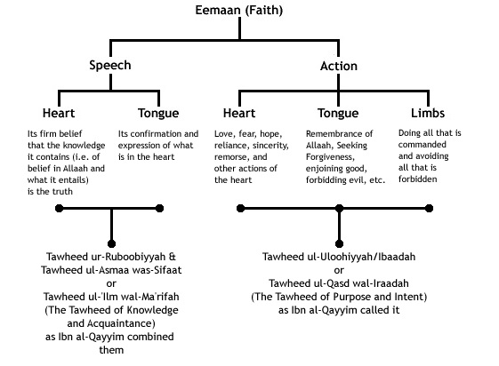

What Is Imaan? - al-Haafidh al-Hakamee [1377H] -Rahimullaah-
Posted: Wed Mar 08, 2017 12:38 pm
What Is Imaan?
al-Haafidh al-Hakamee [1377H] -Rahimullaah-
Question:
What is Imaan?
Answer:
Imaan is both speech and action. Speech of the heart and tongue and actions of the heart, tongue and limbs. It increases with obedience and decreases with disobedience and the people differ according to their level and strength of Imaan.

al-Haafidh al-Hakamee
A‘laam As-Sunnah Al-Manshoorah li I’tiqaad At-Taaifah An-Naajiyah Al-Mansoorah
Translated by Abul-Irbaad Abid Zargar
Source: http://www.fatwaislam.com/fis/index.cfm?scn=fd&ID=173
al-Haafidh al-Hakamee [1377H] -Rahimullaah-
Question:
What is Imaan?
Answer:
Imaan is both speech and action. Speech of the heart and tongue and actions of the heart, tongue and limbs. It increases with obedience and decreases with disobedience and the people differ according to their level and strength of Imaan.

al-Haafidh al-Hakamee
A‘laam As-Sunnah Al-Manshoorah li I’tiqaad At-Taaifah An-Naajiyah Al-Mansoorah
Translated by Abul-Irbaad Abid Zargar
Source: http://www.fatwaislam.com/fis/index.cfm?scn=fd&ID=173